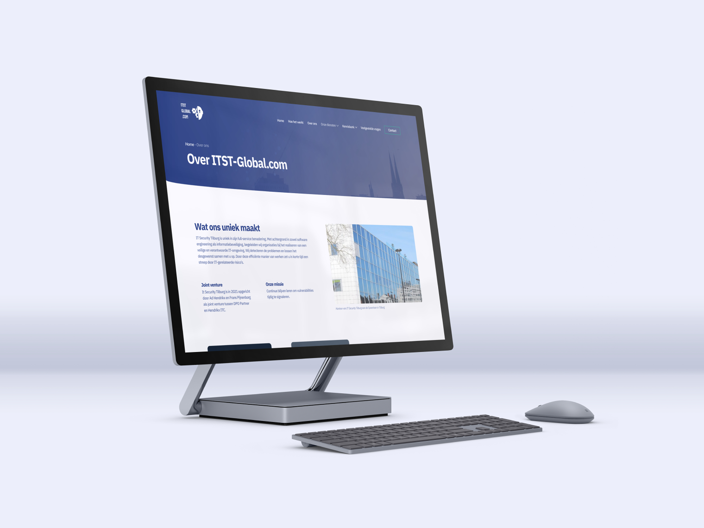

ITST Global performs independent security scans on IT networks. These scans detect vulnerabilities in the IT infrastructure. My task was to implement a new strategy in the website and revamp the UX.
VIEW WEBSITE My task
ITST Global approached me with an assignment; they would like me to implement a new strategy, for the new strategy there is more demand in the market. After an analysis I came across a number of additional problems that could affect sales and because of this we decided to also solve these problems with the new website. A big problem was that it was easy to get stuck because of the navigation, the copywriting was also a big problem.
The solution
I started by drawing up a step-by-step plan that we could complete so that ITST Global had a good overview of when I was where in the process. I fixed the navigation so that users no longer get stuck and improved the copywriting everywhere so that the user can easily find his / her information in the website. I also changed the layout so it’s way easier to scan the website and tightened up the branding. For the new strategy, we added a video so the user sees a face behind ITST Global and logo’s of recent clients for extra reliability. We also ensured that the user can quickly contact ITST so that we do not miss out on potential clients.
The result
The result was very positive, we tested it on several users and the problems were no longer present. The new website allowes the user to find his / her information a lot quicker and the user is not getting stuck anymore, the information is now also displayed in such a way that it shows what ITST Global does a lot better.
"The structured approach of Beyond Measure by Olaf van der Heijden appealed to us to professionally update the ITST-Global.com website. With his network for checks and feedback on the concept, we are more visible online and findable on the world wide web. Olaf's process approach works for a better result!”